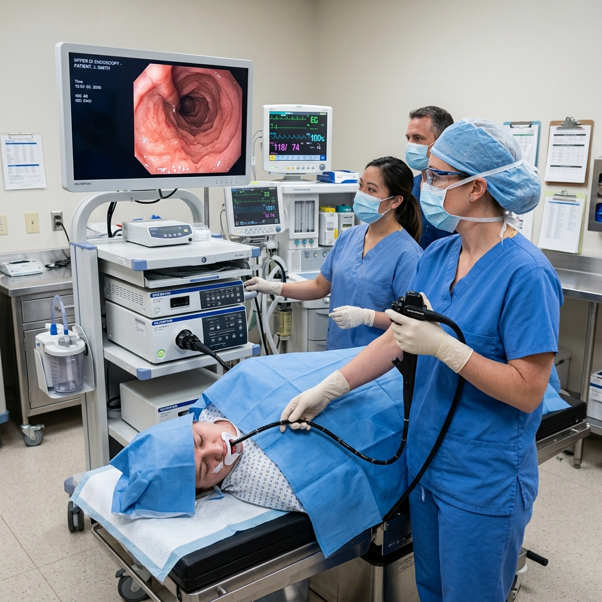
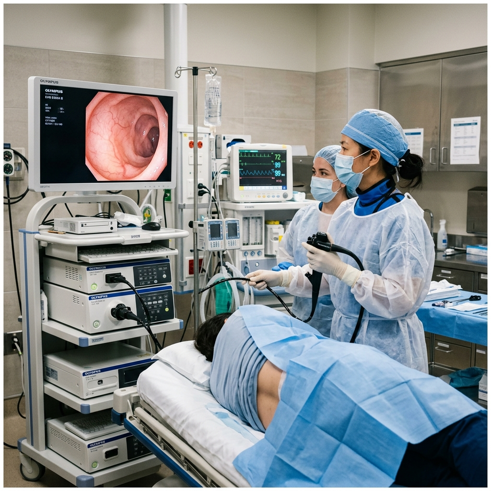
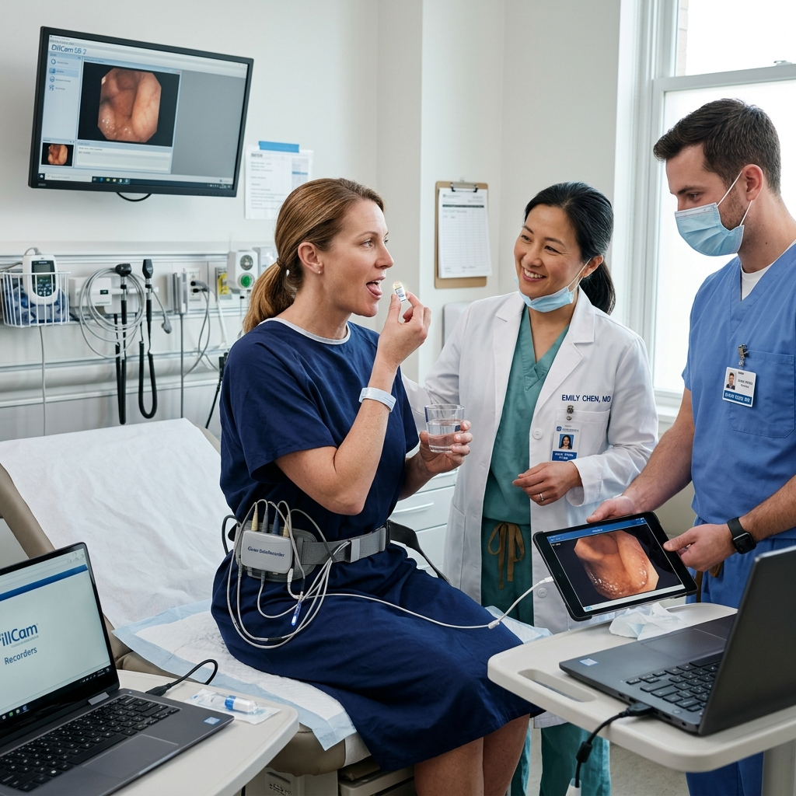
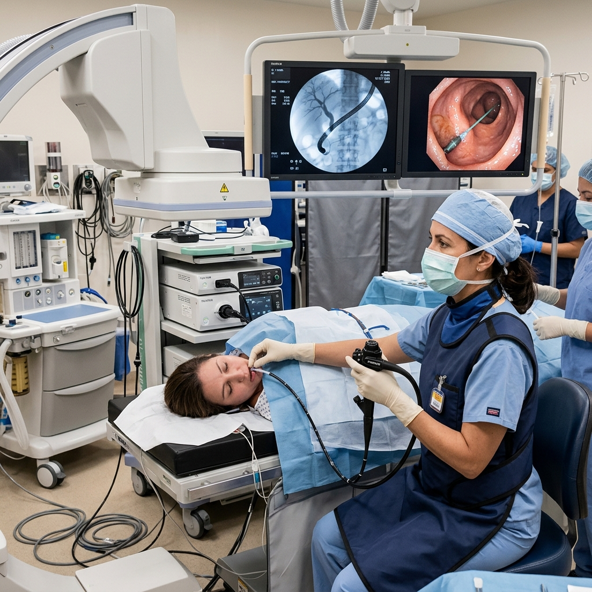
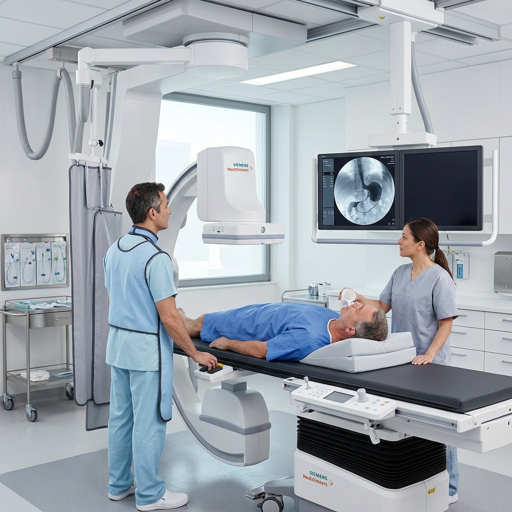
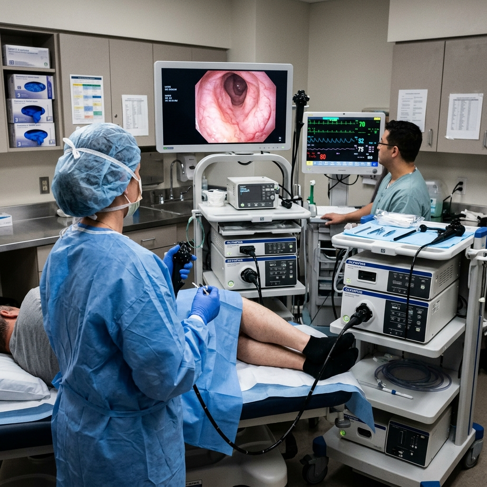

Advanced diagnostic and therapeutic procedures performed with precision and care

Examination of the esophagus, stomach and the first part of the small intestine to diagnose inflammation, ulcers, and acid reflux.

Visual examination of the entire large intestine and distal small intestine for screening, polyps, and bowel changes.

A swallowable miniature capsule camera to visualize the small intestine in high resolution.

Specialized procedure to diagnose and treat conditions affecting the liver, gallbladder, and bile ducts.

Imaging technique using contrast medium to examine the structural anatomy of the digestive tract.

Focused endoscopic examination of the rectum and lower large intestine to detect abnormalities.